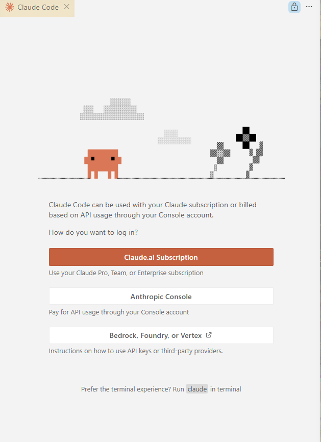
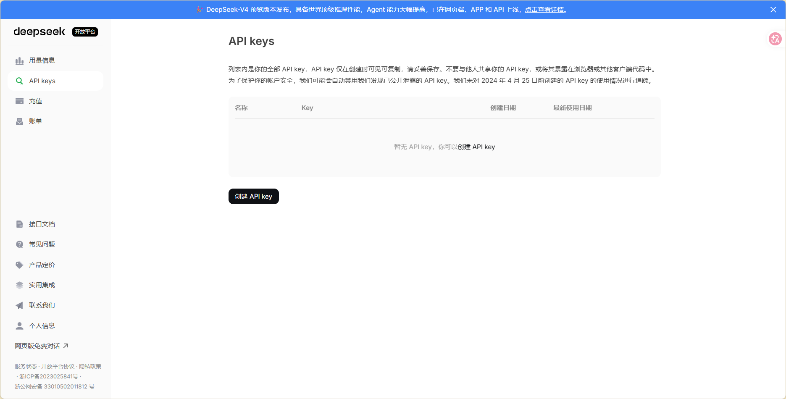
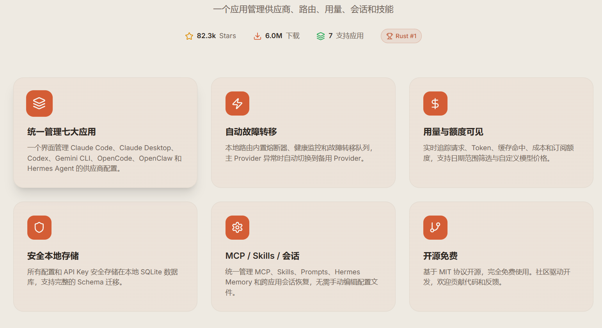
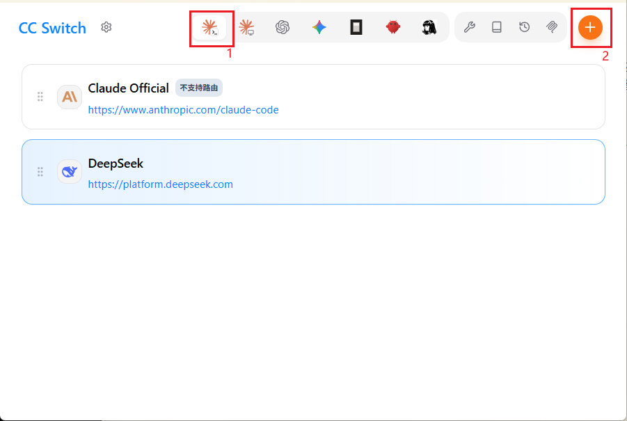
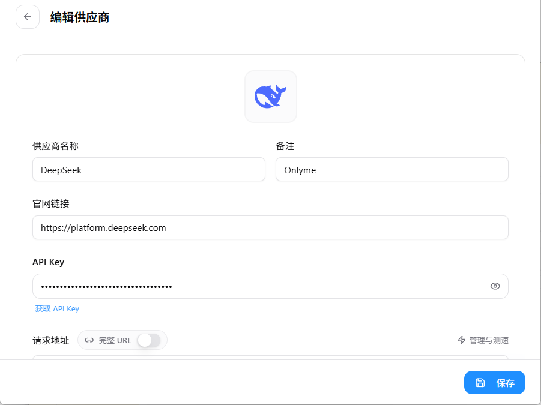
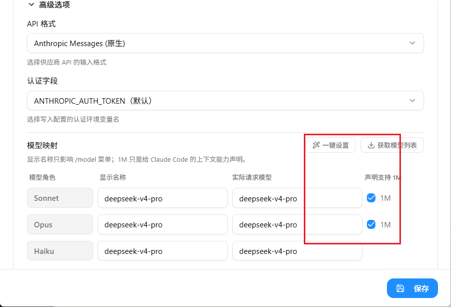
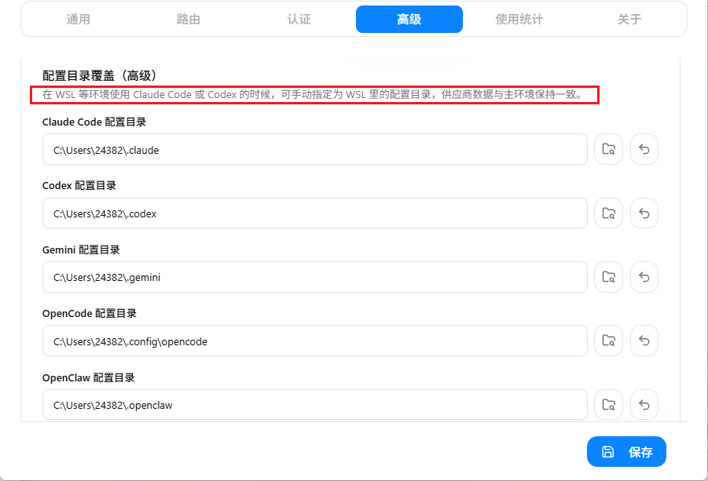
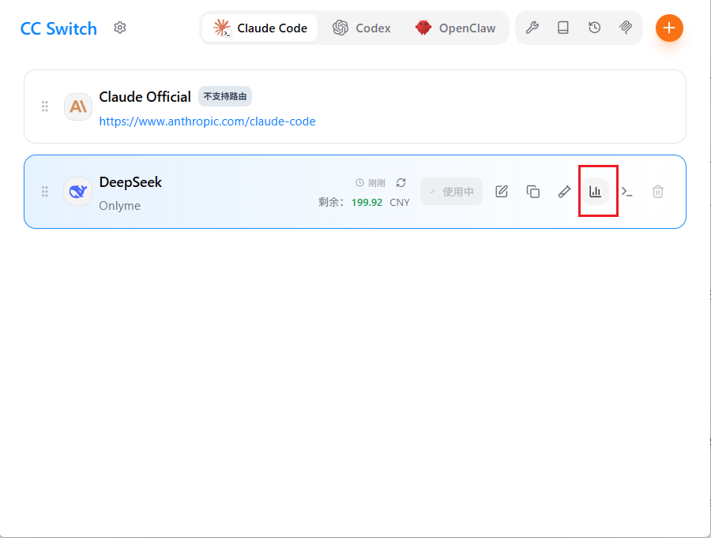
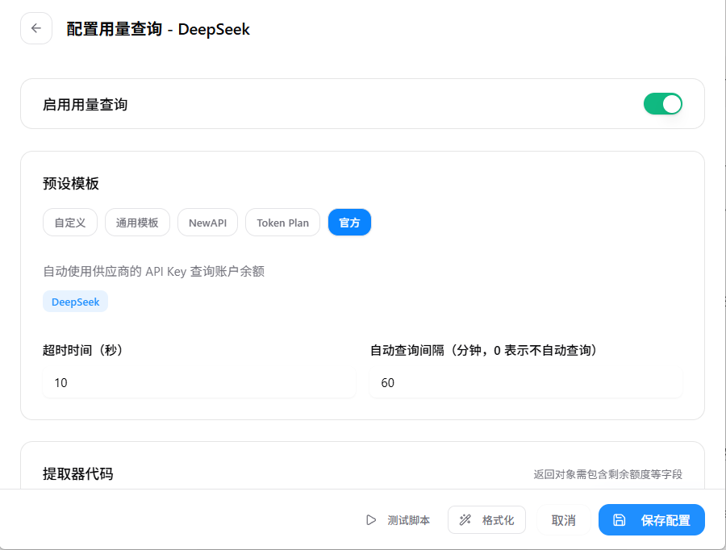
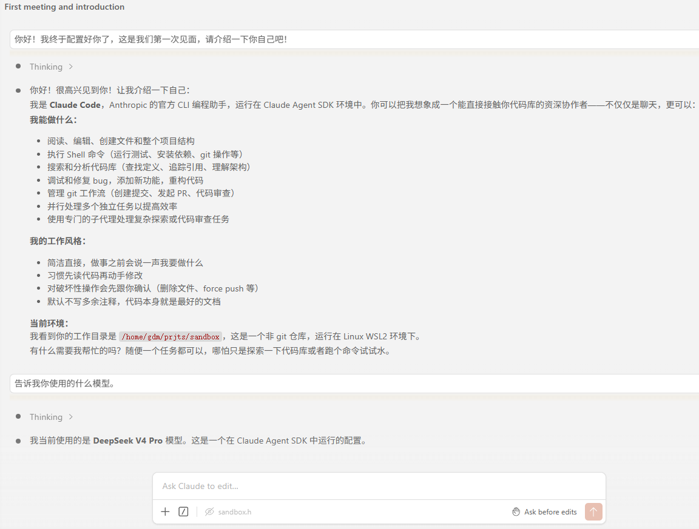

版权信息
warning
本文章为博主原创文章。遵循 CC 4.0 BY-SA 版权协议，转载请附上原文出处链接和本声明。
1. 为什么使用CC for VSCODE？
因为VSCDOE是我最常用的IDE，把 AI agent 与自己的开发环境融合当然是最理想的使用情况了。并且 CC for VSCODE 不仅代码审查更方便，还集成了 CC CLI，，鱼和熊掌兼得，有什么理由不用呢？
2. 安装 CC for VSCODE
在 VSCODE 中安装 CC for VSCODE。
安装完成后提示登陆，大陆地区不太好注册 CC 的账号。因此只能使用第三方APIkey。

3. 获取第三方大模型API：DeepSeekV4
最具性价比的算力提供商。
完成注册后，直接充值然后创建API-key即可。
这里是官方文档——DeepSeek API Docs

4. CC Switch：All in one
现代 AI 编程依赖于 Claude Code、Codex、Gemini CLI、OpenCode 和 OpenClaw 等 CLI 工具——但每个工具都有自己的配置格式。切换 API 供应商意味着手动编辑 JSON、TOML 或 .env 文件，而在多个工具之间缺乏一个统一管理 MCP, SKILLS 的方式。
CC Switch 为你提供一个桌面应用来管理所有五个 CLI 工具。无需手动编辑配置文件，你将获得一个可视化界面，一键将供应商导入应用，一键在不同的供应商之间进行切换，内置 50+ 供应商预设、统一的 MCP, SKILLS 管理以及系统托盘即时切换功能——所有操作都基于可靠的 SQLite 数据库和原子写入机制，保护你的配置不被损坏。
CC Switch 官方网站 - AI 编程工具统一管理平台

安装完成后，为 Claude Code CLI 添加新的供应商 DeepSeek：

请填写你的APIkey

这里可能需要一键配置一下然后声明1M上下文：

4.1. 兼容WSL
甚至考虑到了WSL用户的使用，这他妈不给star都说不过去，我哭死：

直接把配置路径指向你的 WSL 挂载目录即可——我的是 \\wsl.localhost\antiXLinux\home\gdm\.claude
4.2. 【可选】用量查询
你还可以启用用量查询，这样可以直接在 CC Switch 看到自己还有多少余额。
CC Switch 原生支持调用 DeepSeek 官方 API 的余额查询接口，但为了防止产生不必要的后台网络请求，这项功能对于第三方模型默认是关闭的，需要你手动激活。

直接选择官方模板，保存即可，这里我设置的是每一个小时查询一次。

5. Enjoy！
完成上面的配置后，你的 CC for VSCODE 应该就可以正常使用了，无论是在本地Windows，还是WSL环境。

6. CC的完全使用指南
建议直接阅读官方文档，文档不长，也不复杂，写得非常清晰。
-
此章从工作原理角度概述如何使用CC，以及如何使用会话。——Claude Code 如何工作 - Claude Code Docs
Claude Code 在您工作时将您的对话保存在本地。每条消息、工具使用和结果都被写入
~/.claude/projects/下的纯文本 JSONL 文件，这使得回退、恢复和分叉会话成为可能。在 Claude 进行代码更改之前，它还会对受影响的文件进行快照，以便您在需要时可以恢复。有关路径、保留和如何清除此数据，请参阅~/.claude中的应用数据。Claude 的上下文窗口保存您的对话历史、文件内容、命令输出、CLAUDE.md、自动内存、加载的 skills 和系统说明。当您工作时，上下文填满。Claude 自动压缩，但对话早期的说明可能会丢失。将持久规则放在 CLAUDE.md 中，并运行
/context以查看什么在占用空间。每个文件编辑都是可逆的。 在 Claude 编辑任何文件之前，它会对当前内容进行快照。如果出现问题，按两次
Esc以回退到之前的状态，或要求 Claude 撤销。检查点是会话本地的，独立于 git。它们仅涵盖文件更改。影响远程系统的操作（数据库、API、部署）无法进行检查点，这就是为什么 Claude 在运行具有外部副作用的命令之前询问。 -
此章提供如何扩展CC，以及skill、Subagent等扩展的的完全讲解——扩展 Claude Code - Claude Code Docs
将护栏放在 hooks 中。 CLAUDE.md 或 skill 中的”永远不要编辑
.env”之类的说明是请求，而不是保证。阻止编辑的PreToolUsehook 是强制执行。如果规则必须每次都成立，将其作为 hook 而不是提示说明。完全控制skill的加载。 默认情况下，skill 描述在会话开始时加载，以便 Claude 可以决定何时使用它们。在 skill 的 frontmatter 中设置
disable-model-invocation: true以将其完全隐藏在 Claude 中，直到您手动调用它。这将 skills 的上下文成本降低到零，您只需自己触发这些 skills。对于您未编写的 skill，在设置中设置skillOverrides以在不编辑其文件的情况下执行相同操作。 -
此章介绍
.claude文件夹里的内容——探索 .claude 目录 - Claude Code Docs